阿里云服务器配置
本文主要致力于阿里云服务器环境安装与配置
阿里云服务器：centos7
工具：Xshell、filezilia
下文进行详细介绍
卸载jdk
1.查看jdk是否安装
[root@izbp184fbrxa15bxowm0tgz bin]# java -version
[root@izbp184fbrxa15bxowm0tgz bin]# java
[root@izbp184fbrxa15bxowm0tgz bin]# javac
2.查看jdk的安装路径
[root@izbp184fbrxa15bxowm0tgz bin]# which java
/usr/bin/java
3.卸载jdk
[root@izbp184fbrxa15bxowm0tgz bin]# rm -rf /usr/bin/java
4.判断jdk是否卸载干净
[root@izbp184fbrxa15bxowm0tgz bin]# java -version
-bash: /usr/bin/java: No such file or directory
[root@izbp184fbrxa15bxowm0tgz bin]# java
-bash: /usr/bin/java: No such file or directory
[root@izbp184fbrxa15bxowm0tgz bin]# javac
Usage: javac
where possible options include:
-g Generate all debugging info
-g:none Generate no debugging info
-g:{lines,vars,source} Generate only some debugging info
-nowarn Generate no warnings
-verbose Output messages about what the compiler is doing
...
5.查询
[root@izbp184fbrxa15bxowm0tgz bin]# rpm -qa|grep jdk
jdk-1.7.0_80-fcs.x86_64
6.删除
[root@izbp184fbrxa15bxowm0tgz bin]# rpm -e `rpm -qa|grep jdk`
7.再次测试jdk是否卸载干净
[root@izbp184fbrxa15bxowm0tgz bin]# rpm -qa|grep jdk
[root@izbp184fbrxa15bxowm0tgz bin]# javac
-bash: /usr/bin/javac: No such file or directory
若之前设置过环境变量且准备更换jdk安装路径，需要通过vim /etc/profile 删除之前配置的环境变量
安装jdk
1.新建java目录
[root@izbp184fbrxa15bxowm0tgz ~]# mkdir /usr/local/java
2.上传jdk压缩包
通过filezilla将jdk1.8安装包上传到/usr/local/java目录下3.将jdk解压到当前目录下
先进入到java目录下，再进行解压[root@izbp184fbrxa15bxowm0tgz ~]# cd /usr/local/java
[root@izbp184fbrxa15bxowm0tgz java]# tar -zxvf jdk-8u11-linux-x64.tar.gz
通过ll命令查看解压后的文件
[root@izbp184fbrxa15bxowm0tgz java]# ll
total 155300
drwxr-xr-x 8 10 143 4096 Jun 17 2014 jdk1.8.0_11
-rw-r--r-- 1 root root 159019376 Oct 19 18:24 jdk-8u11-linux-x64.tar.gz
[root@izbp184fbrxa15bxowm0tgz java]# rm -f jdk-8u11-linux-x64.tar.gz
[root@izbp184fbrxa15bxowm0tgz java]# ll
total 4
drwxr-xr-x 8 10 143 4096 Jun 17 2014 jdk1.8.0_11
4.复制jdk的路径
进入解压后的jdk文件下，通过pwd命令，右键复制路径：/usr/local/java/jdk1.8.0_11[root@izbp184fbrxa15bxowm0tgz java]# cd jdk1.8.0_11/
[root@izbp184fbrxa15bxowm0tgz jdk1.8.0_11]# pwd
/usr/local/java/jdk1.8.0_11
5.配置环境变量
进入配置文件[root@izbp184fbrxa15bxowm0tgz jdk1.8.0_11]# vim /etc/profile
将光标移动到最底部，按i键进行编辑，添加环境变量 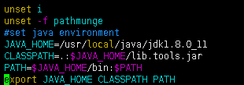#set java environment
JAVA_HOME=/usr/local/java/jdk1.8.0_11
CLASSPATH=.:$JAVA_HOME/lib.tools.jar
PATH=$JAVA_HOME/bin:$PATH
export JAVA_HOME CLASSPATH PATH
加载环境变量：
[root@izbp184fbrxa15bxowm0tgz jdk1.8.0_11]# source /etc/profile
6.测试jdk是否配置成功
java --versionjava
javac
tomcat安装与测试
安装tomcat
1.通过命令检查是否安装过tomcat[root@izbp184fbrxa15bxowm0tgz jdk1.8.0_11]# rpm -qa|grep tomcat
2.上传tomcat并解压 通过filezilla将tomcat压缩包上传到/usr/local目录下，进入该目录下可以查看已上传的压缩包[root@izbp184fbrxa15bxowm0tgz java]# cd /usr/local
[root@izbp184fbrxa15bxowm0tgz local]# ll
...#隐藏其它文件
-rw-r--r-- 1 root root 9417189 Oct 19 19:13 apache-tomcat-8.0.50.tar.gz
...#隐藏其它文件
[root@izbp184fbrxa15bxowm0tgz local]# tar -zxvf apache-tomcat-8.0.50.tar.gz
删除压缩包[root@izbp184fbrxa15bxowm0tgz local]# rm -f apache-tomcat-8.0.50.tar.gz
3.启动tomcat进入tomcat的bin目录
[root@izbp184fbrxa15bxowm0tgz local]# cd apache-tomcat-8.0.50/bin
启动tomcat[root@izbp184fbrxa15bxowm0tgz bin]# ./startup.sh
卸载tomcat
配置完java、tomcat和nginx后上传html文件无法访问，我就怀疑是不是安装出错了，就想卸载tomcat重装， 但最后发现不是tomcat的问题，卸载方式如下：在linux中卸载tomcat没有注册表之类的限制，直接删除tomcat的安装包就可以了
我的tomcat安装位置为/usr/local/文件夹下
[root@izbp184fbrxa15bxowm0tgz ~]# cd /usr/local
[root@izbp184fbrxa15bxowm0tgz local]# rm -rf apache-tomcat-8.0.50/
搭建fastDFS
1.安装依赖环境
[root@izbp184fbrxa15bxowm0tgz ~]# yum -y install libevent
2.上传压缩包并解压
通过filezilla上传安装包到服务器/home/soft/fastDFS文件夹下，通过命令进入该目录[root@izbp184fbrxa15bxowm0tgz ~]# cd /home/soft/fastDFS
[root@izbp184fbrxa15bxowm0tgz fastDFS]# ll
total 424
-rw-r--r-- 1 root root 336001 Oct 19 20:59 fastdfs-5.05.tar.gz
-rw-r--r-- 1 root root 17510 Oct 19 20:59 fastdfs-nginx-module_v1.16.tar.gz
-rw-r--r-- 1 root root 73148 Oct 19 21:00 libfastcommon-1.0.7.tar.gz
[root@izbp184fbrxa15bxowm0tgz fastDFS]# tar -zxvf fastdfs-5.05.tar.gz
[root@izbp184fbrxa15bxowm0tgz fastDFS]# tar -zxvf fastdfs-nginx-module_v1.16.tar.gz
[root@izbp184fbrxa15bxowm0tgz fastDFS]# tar -zxvf libfastcommon-1.0.7.tar.gz
3.libfastcommon-1.0.7
[root@izbp184fbrxa15bxowm0tgz fastDFS]# cd libfastcommon-1.0.7
[root@izbp184fbrxa15bxowm0tgz libfastcommon-1.0.7]# ll
total 24
-rw-rw-r-- 1 root root 2170 Sep 16 2014 HISTORY
-rw-rw-r-- 1 root root 582 Sep 16 2014 INSTALL
-rw-rw-r-- 1 root root 1341 Sep 16 2014 libfastcommon.spec
-rwxrwxr-x 1 root root 2151 Sep 16 2014 make.sh
-rw-rw-r-- 1 root root 617 Sep 16 2014 README
drwxrwxr-x 2 root root 4096 Sep 16 2014 src
[root@izbp184fbrxa15bxowm0tgz libfastcommon-1.0.7]#
[root@izbp184fbrxa15bxowm0tgz libfastcommon-1.0.7]# yum install gcc-c++
[root@izbp184fbrxa15bxowm0tgz libfastcommon-1.0.7]# yum install pcre pcre-devel
[root@izbp184fbrxa15bxowm0tgz libfastcommon-1.0.7]# yum install zlib zlib-devel
[root@izbp184fbrxa15bxowm0tgz libfastcommon-1.0.7]# yum -y install openssl openssl-devel
编译[root@izbp184fbrxa15bxowm0tgz libfastcommon-1.0.7]# ./make.sh
安装[root@izbp184fbrxa15bxowm0tgz libfastcommon-1.0.7]# ./make.sh install
此时已经被安装在了/usr/lib64目录下 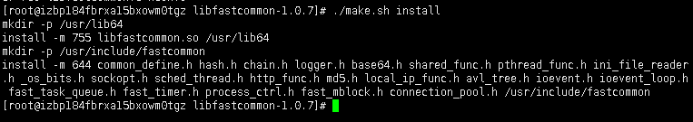 进入这个文件夹，并过滤libfast文件[root@izbp184fbrxa15bxowm0tgz lib64]# cd /usr/lib64
[root@izbp184fbrxa15bxowm0tgz lib64]# ll libfast*
-rwxr-xr-x 1 root root 281240 Oct 19 21:43 libfastcommon.so
[root@izbp184fbrxa15bxowm0tgz lib64]# cp libfastcommon.so /usr/lib
4.fastdfs-5.05
进入fastdfs-5.05目录下[root@izbp184fbrxa15bxowm0tgz fastDFS]# cd /home/soft/fastDFS/fastdfs-5.05
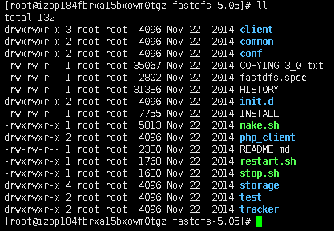 编译[root@izbp184fbrxa15bxowm0tgz fastdfs-5.05]# ./make.sh
安装[root@izbp184fbrxa15bxowm0tgz fastdfs-5.05]# ./make.sh install
此时在/usr/bin和/etc/fdfs中添加了以fastdfs为前缀的文件 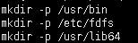 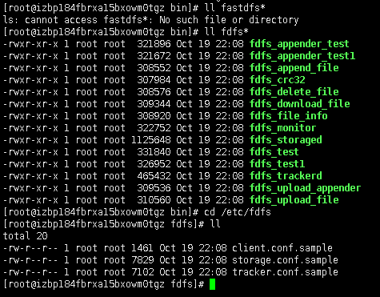 将/home/soft/fastDFS/fastdfs-5.05/conf目录下的文件全部拷贝到/etc/fdfs目录下[root@izbp184fbrxa15bxowm0tgz fdfs]# cd /home/soft/fastDFS/fastdfs-5.05/conf
 拷贝
拷贝
[root@izbp184fbrxa15bxowm0tgz conf]# cp * /etc/fdfs
可以看到已经被拷贝过来了 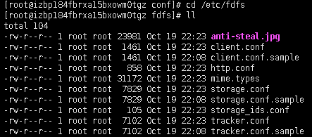5.修改窗口的配置文件
[root@izbp184fbrxa15bxowm0tgz fdfs]# vim tracker.conf
更改日志目录base_path=/fastdfs/tracker
esc返回，按：wq退出因为之前的目录不存在，需创建一个
[root@izbp184fbrxa15bxowm0tgz fdfs]# mkdir /fastdfs/tracker -p
-p为递归创建依次创建storage、客户端client、临时tmp文件夹
[root@izbp184fbrxa15bxowm0tgz fdfs]# mkdir /fastdfs/storage -p
[root@izbp184fbrxa15bxowm0tgz fdfs]# mkdir /fastdfs/client -p
[root@izbp184fbrxa15bxowm0tgz fdfs]# mkdir /fastdfs/tmp -p
查看已创建的文件夹 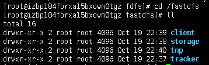 重新进入下图所示目录 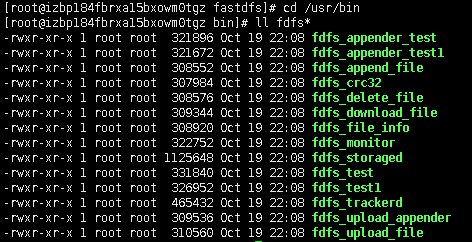 启动fdfs_trackerd服务[root@izbp184fbrxa15bxowm0tgz bin]# fdfs_trackerd /etc/fdfs/tracker.conf
测试是否已启动[root@izbp184fbrxa15bxowm0tgz bin]# fdfs_trackerd /etc/fdfs/tracker.conf restart
可以看到停止和启动的过程 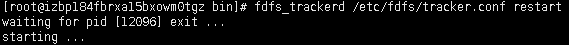6.修改storage配置文件
[root@izbp184fbrxa15bxowm0tgz bin]# cd /etc/fdfs
[root@izbp184fbrxa15bxowm0tgz fdfs]# vim storage.conf
修改日志路径为base_path=/fastdfs/storage
groupnamebase_path=group_name=wdzl
store_path0=/fastdfs/storage
store_path0=/fastdfs/storage
tracker_server改为私网IPtracker_server=172.22.246.0:22122
用公网iP需要设置安全组的开放，而私网IP不需要esc ：wq
启动服务 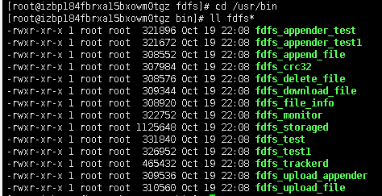
[root@izbp184fbrxa15bxowm0tgz bin]# ./fdfs_storaged /etc/fdfs/storage.conf
测试是否已启动[root@izbp184fbrxa15bxowm0tgz bin]# ./fdfs_storaged /etc/fdfs/storage.conf restart
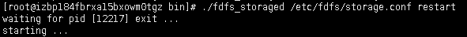 查看进程有没有启动[root@izbp184fbrxa15bxowm0tgz bin]# ps aux |grep storage
下图说明进程存在 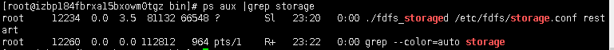 查看窗口进程同理[root@izbp184fbrxa15bxowm0tgz bin]# ps aux |grep tracker
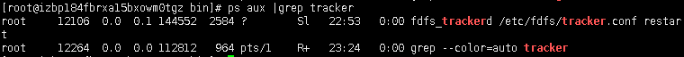7.配置客户端client
[root@izbp184fbrxa15bxowm0tgz bin]# cd /etc/fdfs
[root@izbp184fbrxa15bxowm0tgz fdfs]# vim client.conf
修改日志路径为base_path=/fastdfs/client
tracker_server改为私网IPtracker_server=172.22.246.0:22122
esc：wq退出[root@izbp184fbrxa15bxowm0tgz fdfs]# cd /usr/bin
[root@izbp184fbrxa15bxowm0tgz fdfs]# cd /usr/bin
将一张图片用filezilla放在/home/soft目录下 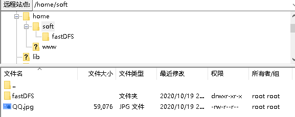 将图片上传到文件服务器[root@izbp184fbrxa15bxowm0tgz bin]# fdfs_test /etc/fdfs/client.conf upload/home/soft/QQ.jpg
得到一个文件服务器的地址，nginx搭建好之后就可以访问了，路径/fastdfs/storage/data/00/00example file url: http://172.22.246.0/wdzl/M00/00/00/rBb2AF-NtNKAH7voAADmxGD-ZFs748_big.jpg
8.fastdfs-nginx-module
[root@izbp184fbrxa15bxowm0tgz ~]# cd /home/soft
[root@izbp184fbrxa15bxowm0tgz soft]# cd fastDFS/
[root@izbp184fbrxa15bxowm0tgz fastDFS]# cd fastdfs-nginx-module
[root@izbp184fbrxa15bxowm0tgz fastdfs-nginx-module]# cd src
[root@izbp184fbrxa15bxowm0tgz src]# vim config
安装nginx
1.解压
将安装包上传至/home/soft目录下[root@izbp184fbrxa15bxowm0tgz ~]# cd /home/soft
[root@izbp184fbrxa15bxowm0tgz soft]# ll
[root@izbp184fbrxa15bxowm0tgz soft]# tar -zxvf nginx-1.12.0.tar.gz
2.代码复制
将以下代码复制粘贴到nginx目录下：./configure \
--prefix=/usr/local/nginx \
--pid-path=/var/run/nginx/nginx.pid \
--lock-path=/var/lock/nginx.lock \
--error-log-path=/var/log/nginx/error.log \
--http-log-path=/var/log/nginx/access.log \
--with-http_gzip_static_module \
--http-client-body-temp-path=/var/temp/nginx/client \
--http-proxy-temp-path=/var/temp/nginx/proxy \
--http-fastcgi-temp-path=/var/temp/nginx/fastcgi \
--http-uwsgi-temp-path=/var/temp/nginx/uwsgi \
--http-scgi-temp-path=/var/temp/nginx/scgi \
--add-module=/home/soft/fastDFS/fastdfs-nginx-module/src
红色路径应根据src目录所在位置进行修改 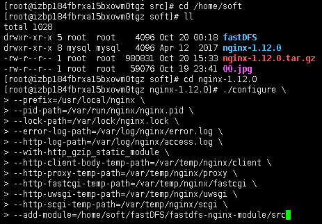 出现下图所示结果说明没有问题了 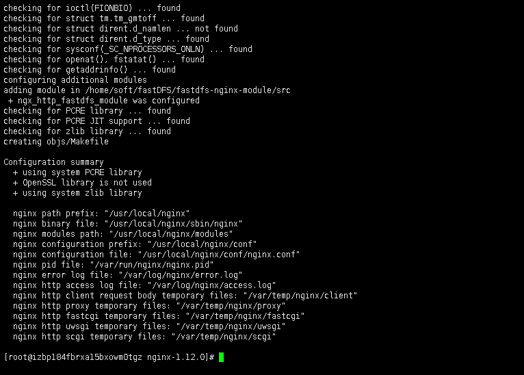
3.编译安装
编译[root@izbp184fbrxa15bxowm0tgz nginx-1.12.0]# make
编译完进行安装，也可以同时进行这两步操作编译完成 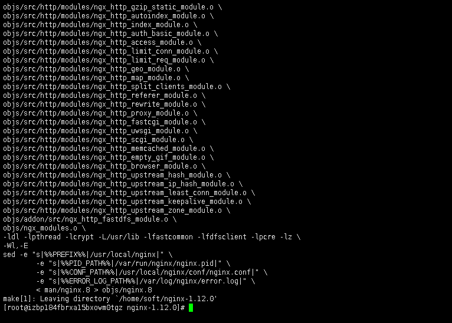 安装
[root@izbp184fbrxa15bxowm0tgz nginx-1.12.0]# make install
安装完成 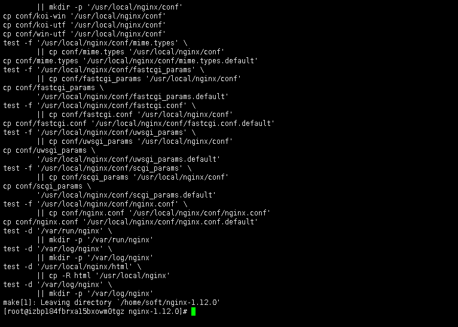 此时cd /usr/local底下就有了nginx目录4.拷贝配置文件
进入待拷贝文件的目标文件夹下[root@izbp184fbrxa15bxowm0tgz local]# cd /home/soft/fastDFS
[root@izbp184fbrxa15bxowm0tgz fastDFS]# cd fastdfs-nginx-module/src
[root@izbp184fbrxa15bxowm0tgz src]# cp mod_fastdfs.conf /etc/fdfs
进入目标文件，可以看到已经拷贝成功 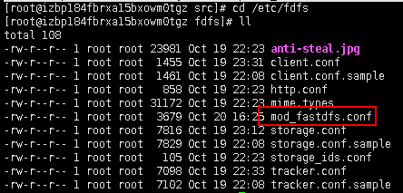5.修改配置文件
[root@izbp184fbrxa15bxowm0tgz fdfs]# vim mod_fastdfs.conf
修改路径自建文件路径，tracker_server改为私网IPbase_path=/fastdfs/tmp
tracker_server=172.22.246.0:22122
group_name=wdzl
url_have_group_name = true
store_path0=/fastdfs/storage
6.修改nginx配置文件
进入nginx配置文件目录[root@izbp184fbrxa15bxowm0tgz fdfs]# cd /usr/local/nginx/conf
修改下图所示配置文件 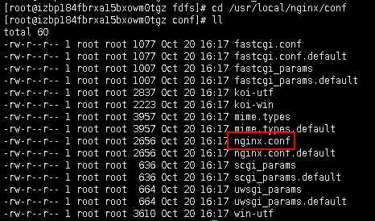 命令如下：[root@izbp184fbrxa15bxowm0tgz conf]# vim nginx.conf
添加如下命令：server{
listen 88;
server_name 47.99.84.195;
location /wdzl/M00{
ngx_fastdfs_module;
}
}
测试是否配置成功
[root@izbp184fbrxa15bxowm0tgz nginx]# cd /usr/local/nginx/sbin
[root@izbp184fbrxa15bxowm0tgz sbin]# ./nginx -t
[root@izbp184fbrxa15bxowm0tgz sbin]# cd /var
[root@izbp184fbrxa15bxowm0tgz var]# mkdir temp
[root@izbp184fbrxa15bxowm0tgz var]# cd temp
[root@izbp184fbrxa15bxowm0tgz temp]# mkdir nginx
[root@izbp184fbrxa15bxowm0tgz temp]# cd nginx
[root@izbp184fbrxa15bxowm0tgz nginx]# mkdir client
[root@izbp184fbrxa15bxowm0tgz nginx]# cd client
[root@izbp184fbrxa15bxowm0tgz client]# ll
total 0
[root@izbp184fbrxa15bxowm0tgz nginx]# cd /usr/local/nginx/sbin
[root@izbp184fbrxa15bxowm0tgz sbin]# ./nginx -t
启动nginx
[root@izbp184fbrxa15bxowm0tgz sbin]# ./nginx
ngx_http_fastdfs_set pid=8471
若安装过程中出现问题，可尝试卸载nginx重装
卸载nginx
（1）首先输入命令 ps -ef | grep nginx检查一下nginx服务是否在运行。 （2）停止Nginx服务
（2）停止Nginx服务
[root@izbp184fbrxa15bxowm0tgz bin]# cd /usr/local/nginx/sbin
[root@izbp184fbrxa15bxowm0tgz sbin]# nginx -s stop
[root@izbp184fbrxa15bxowm0tgz sbin]# netstat -lntp
nginx反向代理tomcat
修改nginx配置文件
进入编辑[root@izbp184fbrxa15bxowm0tgz sbin]# cd /usr/local/nginx/conf
[root@izbp184fbrxa15bxowm0tgz conf]# vim nginx.conf
修改nginx端口时改成 8080，8081 什么的都可以，不一定要 81，但是确保 iptable 要放开对该端口的访问。
注意到 location 的配置：
root html; #根目录，相对于安装目录
index index.html index.htm; #默认主页
默认，你把文件放在安装目录下的 html 文件夹，即可通过 Nginx 访问。
重启nginx
[root@izbp184fbrxa15bxowm0tgz sbin]# ./nginx -s reload
查找原因，发现没有httpd.conf文件，该文件是控制网页默认放置位置的
httpd.conf
安装httpd.conf:yum --disableexcludes=all install -y httpd
再次查找httpd.conf文件[root@izbp184fbrxa15bxowm0tgz ~]# find / -name httpd.conf
/usr/lib/tmpfiles.d/httpd.conf
/etc/httpd/conf/httpd.conf
[root@izbp184fbrxa15bxowm0tgz ~]# systemctl start httpd
[root@izbp184fbrxa15bxowm0tgz ~]# systemctl enable httpd
修改网页默认放置位置
[root@izbp184fbrxa15bxowm0tgz ~]# find / -name httpd.conf
/usr/lib/tmpfiles.d/httpd.conf
/etc/httpd/conf/httpd.conf
[root@izbp184fbrxa15bxowm0tgz ~]# vim /etc/httpd/conf/httpd.conf
参考资料：